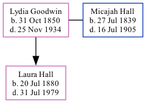

Lydia Ann Missouri Hall (née Goodwin) 1850 - 1934
[ Home ] | [ Calendar ] | [ Surnames Index ] | [ Family History ]Lydia Goodwin was born in De Kalb, Georgia, USA on Oct 31, 18501 and had 1 child with Micajah Hall: Laura. In 1900, she lived in Militia District, Black Hall (Part, Excl. Atlanta City), Fulton, Georgia1.
She died on Nov 25, 1934 in Tampa, Hillsborough, Florida, USA.
Children
- Laura was born on Jul 20, 1880
Citations
- 1900 United States Federal Census Online publication - Provo, UT, USA: MyFamily.com, Inc., 2004.Original data - United States of America, Bureau of the Census. Twelfth Census of the United States, 1900. Washington, D.C.: National Archives and Records Administration, 1900. T623, 1854 rolls.
Family Tree
Generated by ged2site. Last updated on Sep 18, 2024